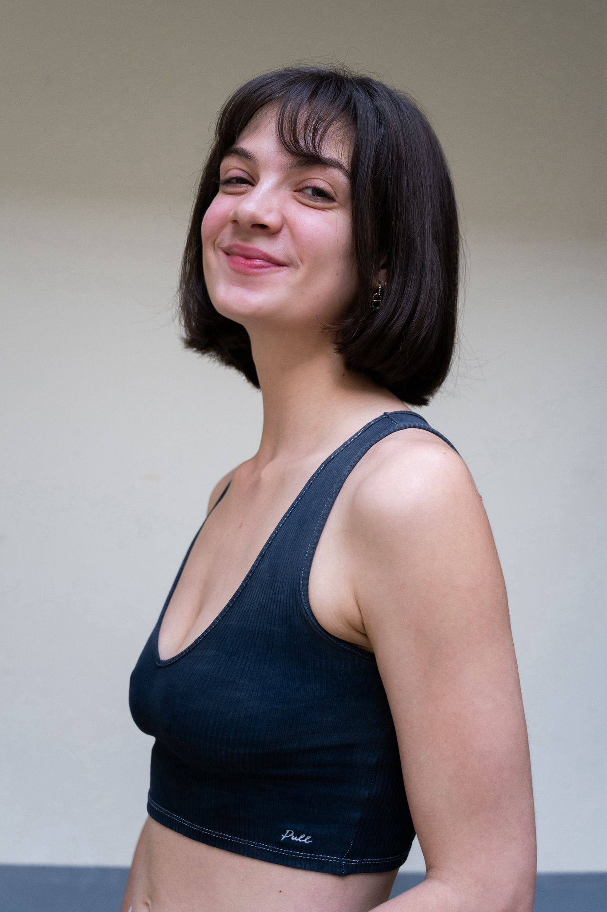

Les voix, les corps et les imaginaires qui construisent les creations de la compagnie
Entre jeu, mise en scene, ecriture et recherche collective, les artistes de Phaestos portent une pratique exigeante et vivante.
Comedienne
Passionnee de theatre, formee au Cours Florent.

Comedienne et metteuse en scene
Passionnee de theatre et de cinema, formee aux Cours Florent.
Comedien, auteur et metteur en scene
Toujours en mouvement, avec l'envie de creer et donner vie a tout ce que l'imagination invente.
Scénographe et metteuse en scène
Diplômée en espace public, mobilité urbaine et théâtre, elle oriente sa pratique vers la scénographie.
Comédienne, metteuse en scène et professeure de théâtre
Formée au Cours Florent et dans les conservatoires d’arrondissement, elle assure le relais sur le plateau lorsque l’équipe en a besoin.